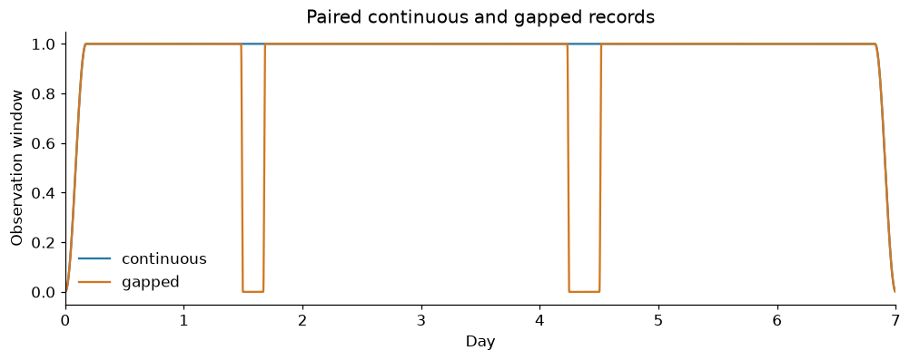
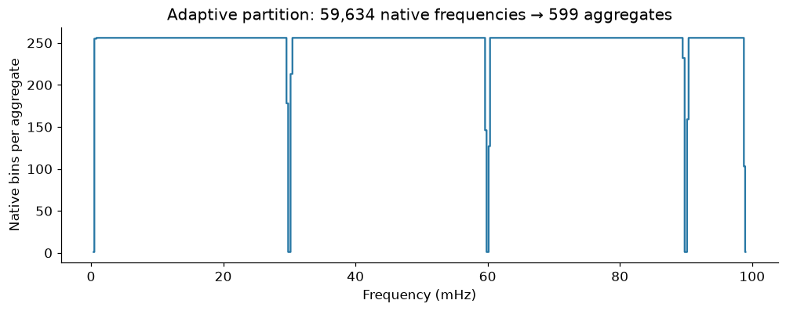
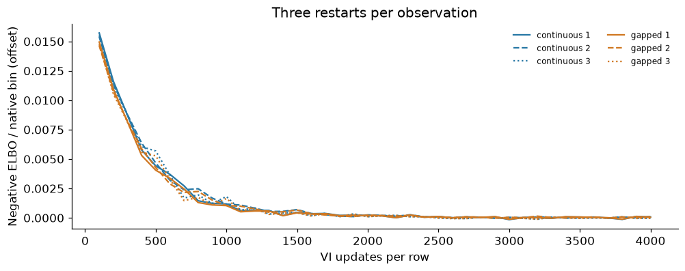
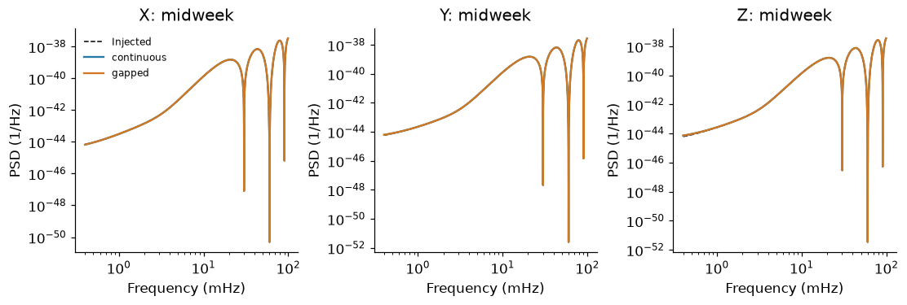
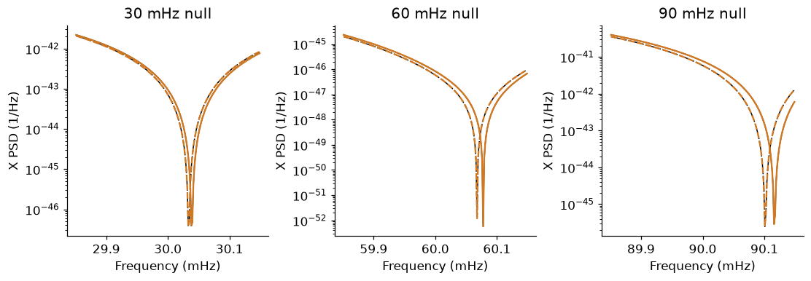
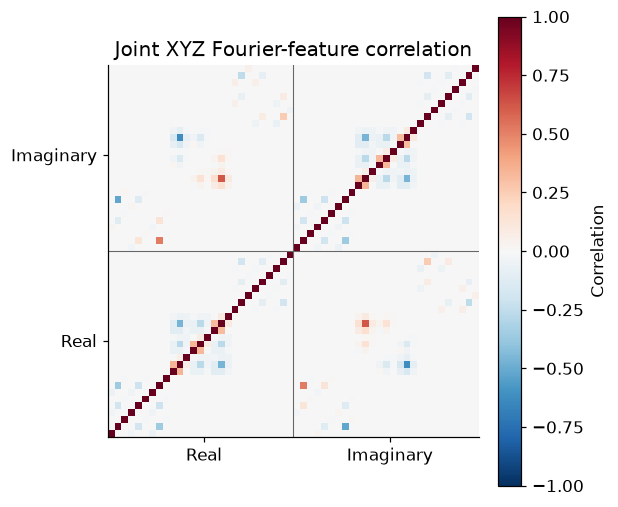

4. Short-duration XYZ with gaps#
Goal#
Estimate the full XYZ spectrum from the same seven-day realization with continuous and gapped observations. A known orbit reference places moving nulls; a multivariate spline learns its smooth matrix correction.
The short-segment idea is inspired by Burke et al., Noisy Pipelines I. This controlled matrix simulation is not their complete instrument pipeline. The fitted residual is frequency-only over the week; the reference carries time variation. We retain an exact joint-covariance point check after the fast fit, without fitting secondary noise components.
Setup#
Run notebook 1 first. This lesson reuses its XYZ record and actual observation
windows. The small adapters below prepare library data and initialize a guide;
all multivariate spline inference is still performed by log_psplines.fit.
%matplotlib inline
from dataclasses import replace
import matplotlib.pyplot as plt
import numpy as np
import pandas as pd
from log_psplines import fit
from lisa_case_studies.notebook_tools import (
COLORS,
matrix_errors,
reference_config,
style,
)
from lisa_case_studies.orbit_reference import DAY
from lisa_case_studies.reference_matrix import (
adaptive_partition,
coefficient_data,
elbo_diagnostics,
matrix_mean,
pool_log_frequency,
)
from lisa_case_studies.tutorial_data import (
load_data,
load_orbit_simulation,
residual_matrix,
workspace,
)
style()
data, simulation = load_orbit_simulation()
saved_windows = load_data("windows")
windows = {name: saved_windows[name] for name in ("continuous", "gapped")}
Step 1 — Keep the original time coordinates#
The gap mask removes observations, not elapsed time. A common taper and separate gap gate determine the two observation operators.
fig, ax = plt.subplots(layout="constrained")
for label, window in windows.items():
ax.plot(data["time"] / DAY, window, color=COLORS[label], label=label)
ax.set(
xlabel="Day",
ylabel="Observation window",
xlim=(0, 7),
title="Paired continuous and gapped records",
)
ax.legend(frameon=False)
plt.show()

Step 2 — Prepare the window-aware matrix reference#
For each window, propagate the nominal orbit factors into the full same-frequency XYZ covariance \(C_{w,0}(f)\). Whiten native coefficients by its Cholesky factor before aggregating frequencies.
This preserves channel cross terms. It is still a Whittle approximation to assume those whitened frequencies are independent. GapLike supplies the masks/windows; its independent-channel likelihood is not substituted for XYZ. More on GapLike and XYZ.
reference = simulation.window_references(windows)
bins = np.flatnonzero(
(simulation.frequency >= 0.4e-3) & (simulation.frequency <= 99e-3)
)
frequency = simulation.frequency[bins]
inputs = {}
for label, window in windows.items():
coefficients = np.fft.rfft(data["xyz"] * window[:, None], axis=0)[bins] * np.sqrt(
2 * simulation.dt / simulation.n
)
white = np.linalg.solve(
np.linalg.cholesky(reference[label][bins]), coefficients[..., None]
)[..., 0]
enbw = simulation.n * np.sum(window**2) / np.sum(window) ** 2
inputs[label] = coefficient_data(white, frequency, enbw=enbw)
Step 3 — Freeze one adaptive partition#
Use only observed gapped training data to select edges, then apply the same partition to both observations. The pilot selects edges; actual complex cross-products and their counts are summed without smoothing. Null neighbourhoods retain native resolution. Bins never change during fitting.
partition = adaptive_partition(inputs["gapped"])
pooled = {
label: pool_log_frequency(values, partition) for label, values in inputs.items()
}
assert partition.freq_bin_counts.sum() == len(frequency)
fig, ax = plt.subplots(layout="constrained")
ax.step(
partition.f_coarse * 1000, partition.freq_bin_counts, where="mid", color=COLORS["X"]
)
ax.set(
xlabel="Frequency (mHz)",
ylabel="Native bins per aggregate",
title=f"Adaptive partition: {len(frequency):,} native frequencies → {partition.Nc:,} aggregates",
)
plt.show()

Step 4 — Fit a full multivariate correction#
The physical model is \(S(t,f)=L_0(t,f)R(f)L_0(t,f)^\dagger\) with a full positive-definite spline matrix \(R\). The library analytically integrates the six Gaussian theta fields and restores their conditional draws afterward. This integration is exact for the chosen Whittle model, not for the joint gapped likelihood.
Use the same prior and basis for both observations, and three independently seeded VI restarts. The guide starts near the known reference to avoid rank-one empirical initialisation. Only training ELBO selects a restart.
base_config, components = reference_config(pooled["gapped"], steps=4000, draws=96)
candidates = {}
for label in windows:
candidates[label] = []
for restart in range(3):
config = replace(base_config, rng_key=207 + restart)
candidates[label].append(fit(pooled[label], config))
selected = {
label: min(items, key=lambda r: float(np.asarray(r.vi.losses)[-8:].mean()))
for label, items in candidates.items()
}
W1106 12:13:04.963393 2373144 cpp_gen_intrinsics.cc:74] Empty bitcode string provided for eigen. Optimizations relying on this IR will be disabled.
Step 5 — Check optimisation before looking at truth#
Loss plateaus and restart agreement are numerical checks. They do not imply NUTS-equivalent uncertainty, especially with correlated Fourier features.
checks = []
fig, ax = plt.subplots(layout="constrained")
for label, items in candidates.items():
offset = min(float(np.asarray(r.vi.losses)[-8:].mean()) for r in items)
for restart, result in enumerate(items):
assert result.metadata["theta_parameterization"] == "marginalized"
rows = [
elbo_diagnostics(loss, len(frequency))
for loss in result.vi.losses_per_block
]
checks.append(
{
"Observation": label,
"Restart": restart + 1,
"Largest tail change / native bin": max(
row["tail_mean_change_per_native_bin"] for row in rows
),
}
)
loss = np.asarray(result.vi.losses)
ax.plot(
np.linspace(100, base_config.vi_steps, len(loss)),
(loss - offset) / len(frequency),
color=COLORS[label],
ls=("-", "--", ":")[restart],
label=f"{label} {restart + 1}",
)
ax.set(
xlabel="VI updates per row",
ylabel="Negative ELBO / native bin (offset)",
title="Three restarts per observation",
)
ax.legend(ncol=2, fontsize=8, frameon=False)
plt.show()
pd.DataFrame(checks).round(6)

| Observation | Restart | Largest tail change / native bin | |
|---|---|---|---|
| 0 | continuous | 1 | 0.000023 |
| 1 | continuous | 2 | 0.000023 |
| 2 | continuous | 3 | 0.000049 |
| 3 | gapped | 1 | 0.000015 |
| 4 | gapped | 2 | 0.000019 |
| 5 | gapped | 3 | 0.000054 |
Step 6 — Recover the physical XYZ spectral matrix#
Undo the reference transformation on a fixed native-frequency evaluation support. Reconstruction uses restored theta draws, and averages complete positive-definite matrices. Truth is used only from this point onward.
probe = np.unique(
np.r_[
np.rint(np.geomspace(0.4e-3, 99e-3, 400) * simulation.n * simulation.dt).astype(
int
),
*[
np.flatnonzero(np.abs(simulation.frequency - f0) < 0.6e-3)
for f0 in (0.03, 0.06, 0.09)
],
]
)
evaluation_frequency = simulation.frequency[probe]
evaluation_time = np.linspace(0, data["time"][-1], 17)
coordinate = np.clip(
np.log(evaluation_frequency / frequency[0]) / np.log(frequency[-1] / frequency[0]),
0,
1,
)
factor = simulation.reference_factor(evaluation_time, evaluation_frequency)
truth = simulation.spectrum(evaluation_time, evaluation_frequency)
estimates = {}
for label, result in selected.items():
correction = matrix_mean(result.posterior, components, coordinate)
estimates[label] = factor @ correction[None] @ factor.conj().swapaxes(-1, -2)
fig, axes = plt.subplots(1, 3, figsize=(10, 3.3), layout="constrained")
for j, (ax, channel) in enumerate(zip(axes, "XYZ", strict=True)):
ax.loglog(
evaluation_frequency * 1000,
truth[8, :, j, j].real,
"k--",
lw=1,
label="Injected",
)
for label, estimate in estimates.items():
ax.loglog(
evaluation_frequency * 1000,
estimate[8, :, j, j].real,
color=COLORS[label],
label=label,
)
ax.set(xlabel="Frequency (mHz)", ylabel="PSD (1/Hz)", title=f"{channel}: midweek")
axes[0].legend(fontsize=8, frameon=False)
plt.show()

fig, axes = plt.subplots(1, 3, figsize=(10, 3.4), layout="constrained")
for ax, f0 in zip(axes, (0.03, 0.06, 0.09), strict=True):
keep = np.abs(evaluation_frequency - f0) < 0.15e-3
for t, ls in ((0, "--"), (-1, "-")):
ax.semilogy(
evaluation_frequency[keep] * 1000,
truth[t, keep, 0, 0].real,
color="k",
ls=ls,
lw=1,
)
ax.semilogy(
evaluation_frequency[keep] * 1000,
estimates["gapped"][t, keep, 0, 0].real,
color=COLORS["gapped"],
ls=ls,
)
ax.set(
xlabel="Frequency (mHz)",
ylabel="X PSD (1/Hz)",
title=f"{f0 * 1000:.0f} mHz null",
)
plt.show()

Black is injected; orange is the gapped reconstruction. Dashed curves show day 0 and solid curves day 7. Geometry supplies the dip motion; smooth splines do not have to discover the nulls unaided.
error_table = pd.DataFrame(
{label: matrix_errors(estimate, truth) for label, estimate in estimates.items()}
).T
error_table.round(4)
| Auto log10 RMSE | Complex cross RMSE | |
|---|---|---|
| continuous | 0.0053 | 0.0115 |
| gapped | 0.0054 | 0.0116 |
Step 7 — Keep an exact covariance benchmark#
Take a small fixed set of adjacent native bins around each null. For these retained XYZ features, the simulator can calculate the full joint real Gaussian covariance, including frequency coupling and pseudo-covariance. This is exact for this declared matrix simulator, not for the full time record. It evaluates point reconstructions; it does not fit or marginalise theta under the joint likelihood.
selected_bins = np.unique(
(
np.rint(np.array([0.03, 0.06, 0.09]) * simulation.n * simulation.dt).astype(
int
)[:, None]
+ np.array([-1, 0, 1])[None]
).ravel()
)
window = windows["gapped"]
nominal_covariance = simulation.feature_covariance(window, selected_bins)
std = np.sqrt(np.diag(nominal_covariance))
correlation = nominal_covariance / np.outer(std, std)
fig, ax = plt.subplots(figsize=(5.5, 4.5), layout="constrained")
image = ax.imshow(correlation, vmin=-1, vmax=1, cmap="RdBu_r", origin="lower")
half = len(correlation) // 2
ax.axvline(half - 0.5, color="0.4", lw=0.7)
ax.axhline(half - 0.5, color="0.4", lw=0.7)
ax.set(
xticks=[half / 2, 1.5 * half],
yticks=[half / 2, 1.5 * half],
xticklabels=["Real", "Imaginary"],
yticklabels=["Real", "Imaginary"],
title="Joint XYZ Fourier-feature correlation",
)
fig.colorbar(image, ax=ax, label="Correlation")
plt.show()

Off-diagonal frequency blocks are the information discarded by the fast Whittle fit. The matrix also retains within-frequency XYZ correlations. Use four independent realizations for the following point check. The injected-matrix row is an oracle control, never a model-selection input. Outside the fitted frequency band, the recovered residual is extended constantly at its nearest boundary; this assumption is explicit in the score.
full_coordinate = np.clip(
np.log(simulation.frequency[1:] / frequency[0])
/ np.log(frequency[-1] / frequency[0]),
0,
1,
)
fitted_residual = matrix_mean(selected["gapped"].posterior, components, full_coordinate)
covariances = {
"Reference only": nominal_covariance,
"Gapped spline point": simulation.feature_covariance(
window, selected_bins, correction=fitted_residual
),
"Injected matrix (oracle)": simulation.feature_covariance(
window, selected_bins, correction=residual_matrix(simulation.frequency[1:])
),
}
whitening = np.linalg.inv(np.linalg.cholesky(nominal_covariance))
validation = (
np.asarray(
[
simulation.features(simulation.draw(seed), window, selected_bins)
for seed in range(1007, 1011)
]
)
@ whitening.T
)
joint_scores = []
for label, covariance in covariances.items():
covariance = whitening @ covariance @ whitening.T
q = np.einsum("ri,ir->r", validation, np.linalg.solve(covariance, validation.T))
joint_scores.append(
{
"Point model": label,
"Mean exact joint q / dimension": q.mean() / covariance.shape[0],
}
)
pd.DataFrame(joint_scores).round(3)
| Point model | Mean exact joint q / dimension | |
|---|---|---|
| 0 | Reference only | 0.962 |
| 1 | Gapped spline point | 0.964 |
| 2 | Injected matrix (oracle) | 0.966 |
Checks and next steps#
A joint quadratic near one is an independent point-model check, not proof of posterior coverage. The main inference remains an approximate Whittle fit. The reference, partition, priors and restarts were fixed before the independent validation records were generated.
For the full derivation, see the simulation notes and GapLike/XYZ explanation.
assert np.isfinite(truth).all()
for label, estimate in estimates.items():
assert np.isfinite(estimate).all()
assert (
len(
[
name
for name in selected[label].posterior
if name.startswith("weights_theta_")
]
)
== 6
)
np.savez_compressed(
workspace() / "short_xyz_recovery.npz",
frequency=evaluation_frequency,
time=evaluation_time,
truth=truth,
continuous=estimates["continuous"],
gapped=estimates["gapped"],
bin_starts=partition.J_start,
bin_stops=partition.J_stop,
bin_counts=partition.freq_bin_counts,
)
error_table.to_json(workspace() / "short_xyz_errors.json", orient="index", indent=2)